How To Install Wordpress On Ubuntu 22.04 and Monitor Website Logs
February 5, 2024

Hello everyone,
In this blog, we'll walk you through the step-by-step process of
installing WordPress on Ubuntu 22.04, ensuring a seamless setup for your website.
But that's not all - we'll also delve into the crucial aspect of monitoring website logs,
empowering you with the tools to track performance, troubleshoot issues, and keep
your WordPress site running smoothly. Let's dive in and simplify the process of both
installation and monitoring for a robust online presence. Here we use ubuntu server
and install apache to host WordPress site and Splunk to monitor the logs from it.
Ubuntu Server Installation on VirtualBox
Download Ubuntu Server 22.04 from this link. Install and configure a virtual machine in VirtualBox.
Install Apache
Open the terminal on your Ubuntu system. The terminal is a text interface to your computer, which you will use to run all the commands.
First, update your software package list.
ubuntu@ubuntu:~$ sudo apt-get update
If you encounter any issues with missing tools, run this command.
ubuntu@ubuntu:~$ sudo apt install net-tools
Run the below command to install Apache 2 on Ubuntu 22.04.
ubuntu@ubuntu:~$ sudo apt install apache2
It is necessary to allow Apache2 to start at the system boot time and to start the service to verify its status as well.
ubuntu@ubuntu:~$ sudo systemctl enable apache2
ubuntu@ubuntu:~$ sudo systemctl status apache2 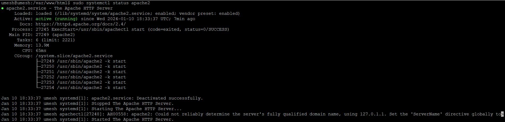 Open your web browser, and search your ip in the address box to verify that the Apache server has been started.
If the Apache2 web server is running, it will display the default Apache2 index page. 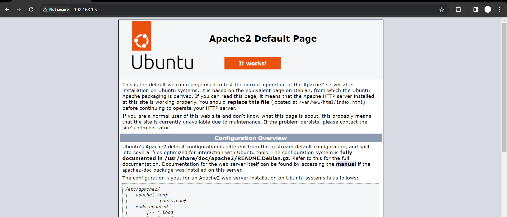
Install MySQL
After Apache has been started, it is time to install MySQL. Run the following command in the terminal to do this:
ubuntu@ubuntu:~$ sudo apt install mysql-server 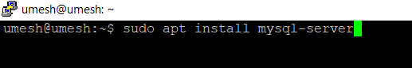 It is highly recommended that you run a security program after the database server has been installed to remove unsecure default settings and protect your database.
ubuntu@ubuntu:~$ sudo mysql_secure_installation 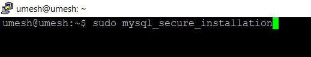 You will be asked to install the validate_password plugin. So, type Y/Yes, then press Enter and finally choose the default password strength.
To answer the remaining questions, press Y and hit the ENTER key for each prompt.
This command will also enable MySQL to begin on boot.
ubuntu@ubuntu:~$ sudo systemctl enable mysql
ubuntu@ubuntu:~$ sudo systemctl status mysql
Install PHP
WordPress is a PHP-based CMS. We need PHP to process the dynamic content on our WordPress site.
Ubuntu 20.04 defaults to PHP 7.4. We will need additional modules to allow PHP to communicate with Apache and MySQL instances. The following command will install PHP along with the MySQL and Apache modules:
ubuntu@ubuntu:~$ sudo apt install php libapache2-mod-php php-mysql 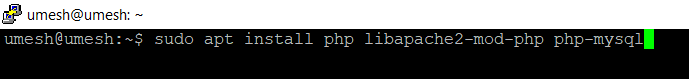WordPress and many plugins use PHP extensions, which you will need to install manually.
ubuntu@ubuntu:~$ sudo apt install php-curl php-gd php-mbstring php-xml php-xmlrpc php-soap php-intl php-zip 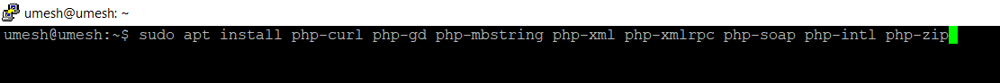 The following command will verify that PHP 7.4 has been successfully installed:
ubuntu@ubunu:$ php -v 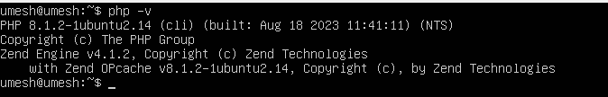After PHP has been installed and any required extensions have been installed, Apache must be restarted to load the new extensions.
ubuntu@ubuntu:~$ sudo systemctl restart apache2
Install WordPress
First, we will download the WordPress installation files and place them in the default web server root directory /var/www/html.
ubuntu@ubuntu:~$ cd /var/www/html
Now download the latest WordPress install with the following command.
ubuntu@ubuntu:~$/var/www/html$ sudo wget -c http://wordpress.org/latest.tar.gz 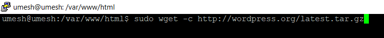Extract the files
ubuntu@ubuntu: ~$/var/www/html$ sudo tar -xzvf latest.tar.gz
ubuntu@ubuntu: ~$/var/www/html$ ls -l 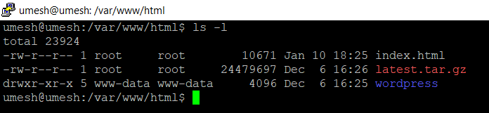 The extracted WordPress files will be now placed in the WordPress directory at the following location on your server /var/www/html/wordpress
The user of your web server must own these files. We are using Apache as our web server. Apache is running on Ubuntu 20.04. The following command will allow you to change the owner of these files and set the appropriate permissions:
ubuntu@ubuntu: ~$ sudo chown -R www-data:www-data /var/www/html/wordpress
Create a Database for WordPress
Next, we will create a WordPress database for the site and set up a user account. This will make it easier to manage the site and increase its security. Log in to your MySQL root account via Terminal by entering:
ubuntu@ubuntu: ~$/var/www/html$ sudo mysql -u root -p
Create a separate database for WordPress to manage
mysql>CREATE DATABASE demo_db;
To access the new database, we will create a MySQL user account. Enter a strong password
mysql>CREATE USER ‘demo_user’@’%’ IDENTIFIED BY 'demo-password';
You have just created a new user. Next, let the database know that your demo_user should have complete access to the database you set up:
mysql>GRANT ALL ON demo_db.* TO 'demo_user'@'%';
You now have a database and user account, each made specifically for WordPress. You need to flush the privileges so that the current instance of MySQL knows about the recent changes made:
mysql>FLUSH PRIVILEGES;
Exit out of MySQL by writing the following:
mysql>exit; 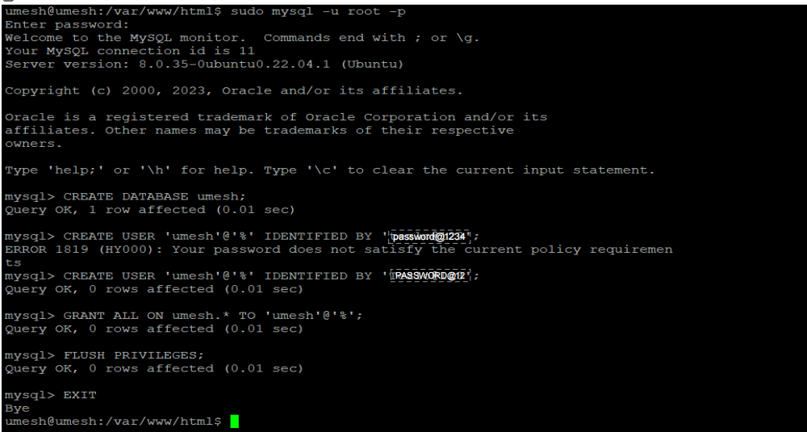 Allow the executable permission to be granted to the WordPress folder.
ubuntu@ubuntu: ~$/var/www/html$ sudo chmod -R 777 wordpress/
ubuntu@ubuntu: ~$/var/www/html$ cd wordpress/
Setup and Configure Wordpress
After setting up a database for WordPress, the next and final step is to set up and configure WordPress. Firstly, you need to create a configuration file for WordPress. So, rename the sample WordPress configuration file using the following command:
ubuntu@ubuntu: ~$/var/www/html/wordpress$ mv wp-config-sample.php wp-config.php
Edit the wpconfig. As shown below, edit the php file.
ubuntu@ubuntu: ~$/var/www/html/wordpress$ sudo nano wp-config.php
Update the database settings by replacing demo_db, demo_user, and demo_password with your own details.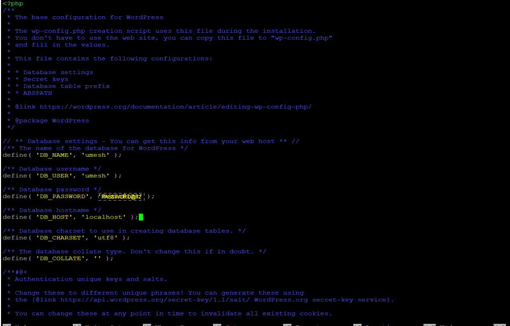 Save the file and close it.
Once you have done this, you can access your WordPress page to finish the installation. Open the browser and go to : https://your_server_IP/wordpress/
The next screen will open. Click on Continue to select the language. 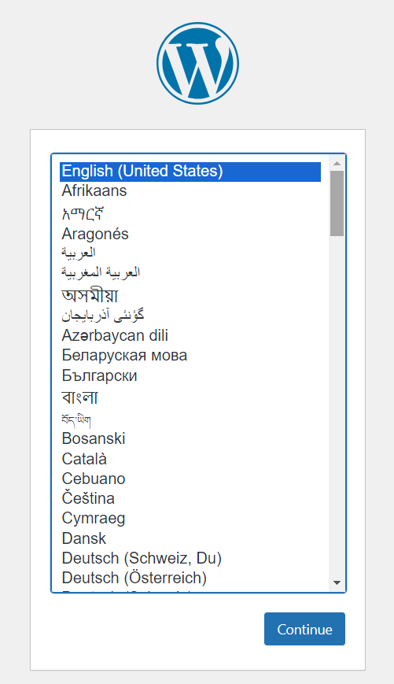Click on “Install WordPress” to enter your preferred information, including site title, username, and password.
- Site Title: Enter the WordPress website name. We recommend entering the domain name to optimize your site.
- Username: Create a new username to log in to WordPress.
- Password: Create a password to protect your WordPress account.
- Your email: Add your email address to receive updates and notifications.
- Search engine visibility: You can leave this box unchecked to prevent search engines from indexing your site until it’s ready.
 After successfully logging in, the WordPress dashboard page will greet you.
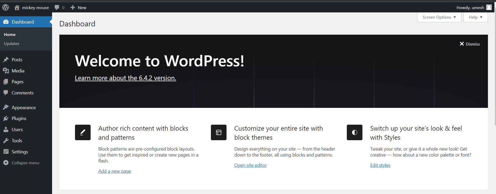
After successfully logging in, the WordPress dashboard page will greet you.
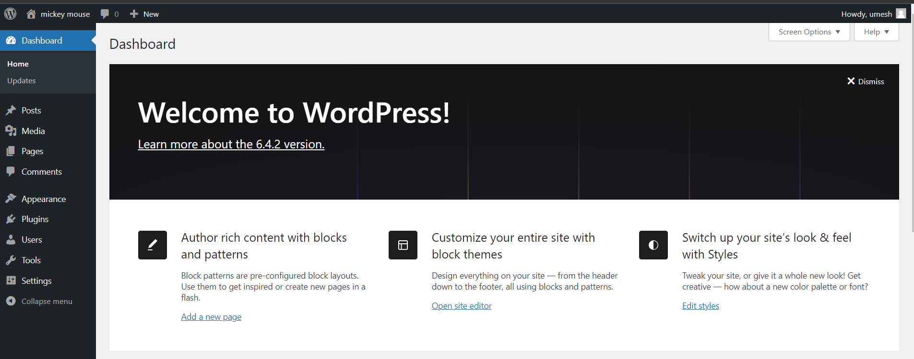WordPress Site Loading Problem
If you've changed the network and your resulting IP address is different, you may encounter issues accessing your WordPress site. Here's a step-by-step guide to troubleshoot and resolve the issue:
Update wp-config.php
Access the WordPress wp-config.php file located in your WordPress installation directory /var/www/html/wordpress/wp-config.php
ubuntu@ubuntu: ~$ sudo nano wp-config.php
Add the WP_HOME and WP_SITEURL constants with the new IP address above the line /* That’s all, stop editing! Happy publishing. */
define('WP_HOME', 'http://your-new-ip/wordpress');
define('WP_SITEURL', 'http://your-new-ip/wordpress');
Replace 'your-new-ip' with the actual new IP address. 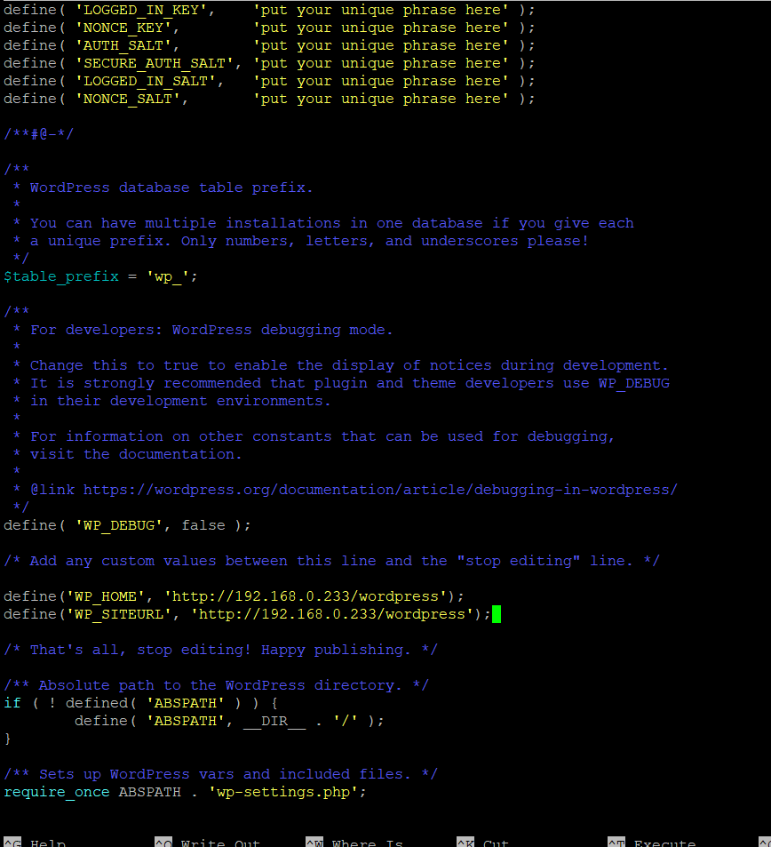After making changes, restart Apache
ubuntu@ubuntu: ~$sudo systemctl restart apache2
Deploying the Splunk Universal forwarder on Ubuntu
You will need a Splunk.com account to access the download. After login, click on “free splunk” then click on “Free trails and Downloads page” and scroll down there you will see Universal Forwarder (get my free download). There you”ll want to click on the Linux tab and choose the download package (choose the correct file 32/64bit ) (.tgz).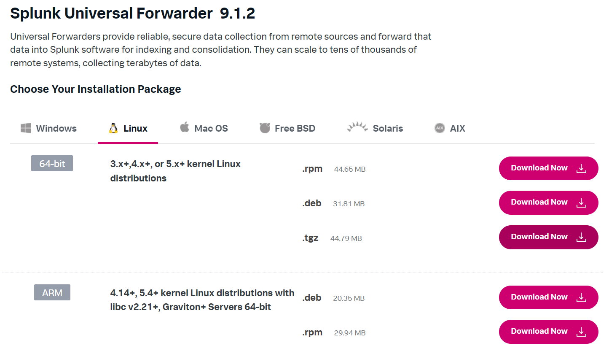Clicking the download link will take you to a page that automatically downloads the installer of choice. One useful tool (conveniently placed in the “useful tools” section) is the “download via command line” option, which gives you a wget link that can be pasted into a terminal to download the installer directly on a Linux host.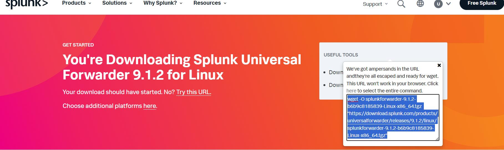 Start by downloading the .tgz installer from Splunk on /tmp directory by using the link.
ubuntu@ubuntu: ~$ cd /tmp
ubuntu@ubuntu:/tmp~$ <copied_link>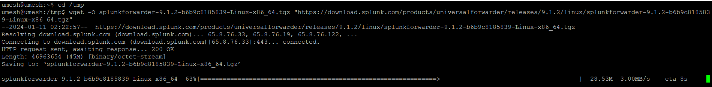Then, extract the .tgz file to the location where you want to run the Universal Forwarder. Generally, pick the default location of /opt/splunkforwarder. The following commands can be used to accomplish this (assuming that the UF package is downloaded to /tmp)
ubuntu@ubuntu:/tmp~$ sudo tar xvzf splunkforwarder-9.1.2-b6b9c8185839-Linux-x86_64.tgz -C /opt
Note: most versions of tar support the -C argument to specify a directory to extract the tarball. If your version of tar doesn’t support this argument, you can also switch into the directory where you’re looking to extract the UF package.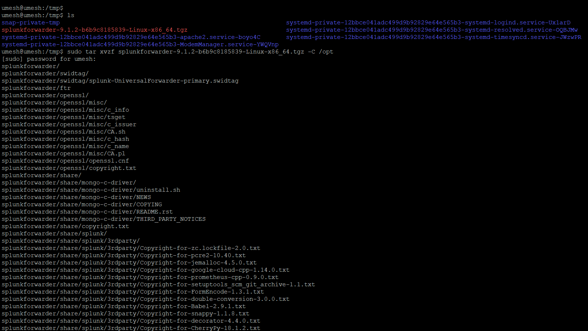Next, to start the Splunk Forwarder, navigate to bin directory on Splunk Forwarder:
ubuntu@ubuntu:~$ cd /opt/splunkforwarder/bin
Next, start the Splunk Forwarder:
ubuntu@ubuntu:/opt/splunkforwarder/bin ~$ sudo ./splunk start --accept-license
You’ll be prompted to specify an administrator username and password; this is the account that was specified above for troubleshooting the UF. It does not (and should not) need to be an account that already exists on the system.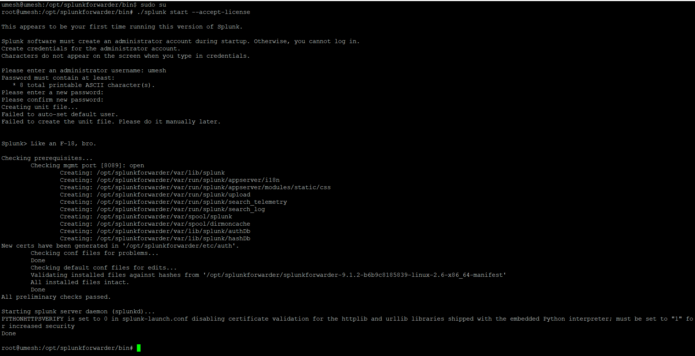 Finally, enable the Universal Forwarder to start on boot:
ubuntu@ubuntu:/opt/splunkforwarder/bin ~$ sudo ./splunk enable boot-start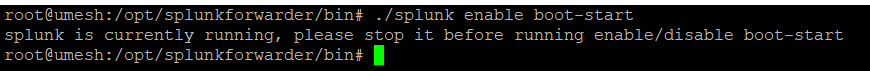At this point, the Universal Forwarder installation is complete. Now we need to Configure the Deployment Server.
Configuring Splunk Universal Forwarder
Configuring Splunk Universal Forwarder on an Ubuntu server to monitor logs from another Windows machine involves a few steps.
Open the output.conf file for editing. This file is located in the Splunk Universal Forwarder configuration directory. The default path is /opt/splunkforwarder/etc/system/local/
(if there no outputs.conf file on /opt/splunkforwarder/etc/system/local/ then create one using the command
ubuntu@ubuntu:/opt/splunkforwarder/etc/system/local/ ~$ sudo nano outputs.conf )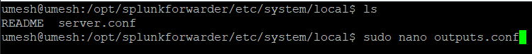Add the following lines to the outputs.conf file:
[tcpout]
defaultGroup = splunk-group
[tcpout:splunk-group]
server = <splunk_server_ip>:<splunk_listener_port>
*Remember to replace <splunk_server_ip> (where you want to send your logs to, in my case its my windows machine ip) and <splunk_listener_port> (eg:9997) with the appropriate values for your Splunk server.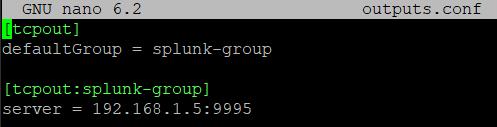Now, you need to configure which logs to forward. This is done using the inputs.conf file.
Open the inputs.conf file for editing. This file is located in the Splunk Universal Forwarder configuration directory. The default path is /opt/splunkforwarder/etc/system/local/inputs.conf
(if there no inputs.conf file on /opt/splunkforwarder/etc/system/local/ then create one using the command ubuntu@ubuntu:/opt/splunkforwarder/etc/system/local/ ~$ sudo nano inputs.conf ) 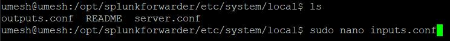Add configurations for the logs you want to monitor. For example, to monitor Apache access logs. (You can view available logs on /var/logs/apache2) [monitor:///var/log/apache2/access.log]
sourcetype = access_combined
index = web_logs
[monitor:///var/log/apache2/error.log]
sourcetype = apache_error
index = web_logs
[monitor:///var/log/apache2/other_vhosts_access.log]
sourcetype = apache_error
index = web_logs 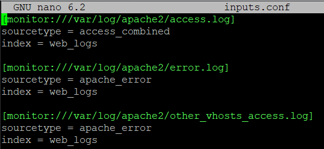Save the file and restart the Splunk Universal Forwarder
ubuntu@ubuntu: ~$ sudo /opt/splunkforwarder/bin/splunk restart
Adjusting the firewall settings
you may need to adjust the firewall settings to allow communication between the Splunk Universal Forwarder on your Ubuntu server and the Splunk server.
Check Current Firewall Status: ubuntu@ubuntu: ~$sudo ufw status
If firewall inactive: ubuntu@ubuntu: ~$sudo ufw enable
Allow Splunk Forwarder Traffic:
ubuntu@ubuntu: ~$ sudo ufw allow <splunk_listener_port>/tcp
Replace <splunk_listener_port> with the port you want to sent log to (eg:9997)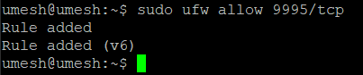 { It is better to allow these ports to avoid connection errors (80/tcp, 22, 443/tcp)
ubuntu@ubuntu: ~$sudo ufw allow 80/tcp
ubuntu@ubuntu: ~$sudo ufw allow 22
ubuntu@ubuntu: ~$sudo ufw allow 443/tcp }
Reload the firewall:
ubuntu@ubuntu: ~$sudo ufw reload
Restart Splunk Universal Forwarder:
ubuntu@ubuntu: ~$ sudo /opt/splunkforwarder/bin/splunk restart
Configuring Splunk Server
If your Splunk server is running on another machine (e.g., a Windows machine), you need to ensure that the Windows Firewall or any other firewall software is configured to allow incoming traffic on <splunk_listener_port> you assigned before(eg:9997).
Go to windows settings> Windows Defender Firewall. Click on "Advanced settings" on the left panel.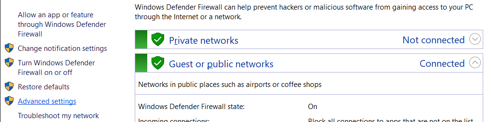In the Windows Firewall with Advanced Security window, right-click on "Inbound Rules" and choose "New Rule..."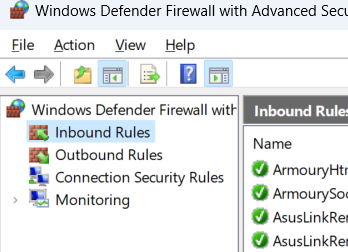
 Select "Port" and click "Next".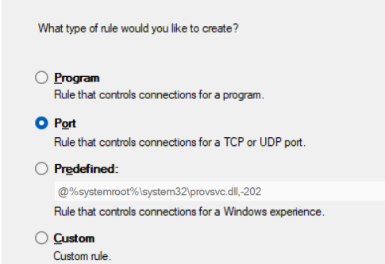Choose “TCP” and enter the <splunk_listener_port> you assigned before(eg:9997) and
click next.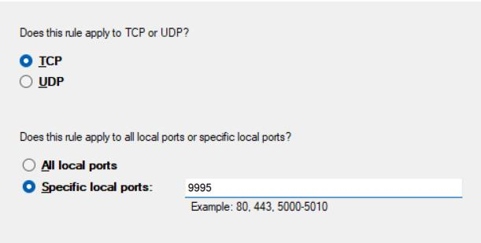“Allow the connection” and click “Next”.
Select "Port" and click "Next".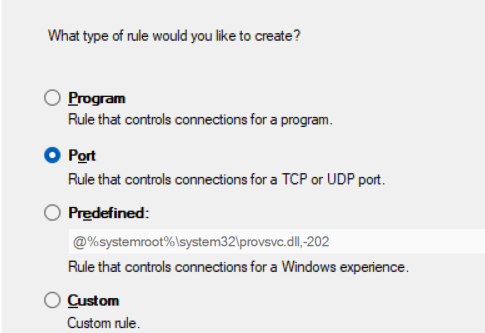Choose “TCP” and enter the <splunk_listener_port> you assigned before(eg:9997) and
click next.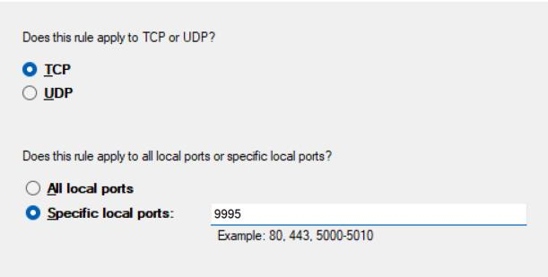“Allow the connection” and click “Next”.Enter a name for the rule (e.g., Splunk Universal Forwarder). 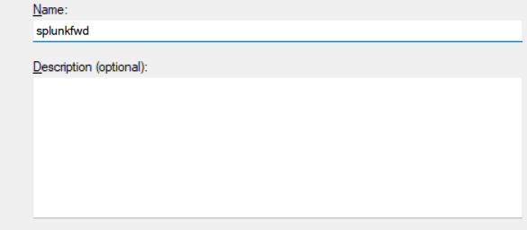Click "Finish" to create the rule.
Same way set “Outbound Rules” also. 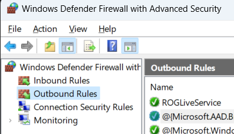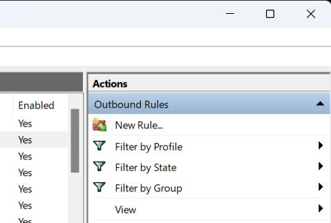
Splunk Enterprise configuration
Log in to your Splunk Enterprise. Go to "Settings" > "Forwarding and receiving".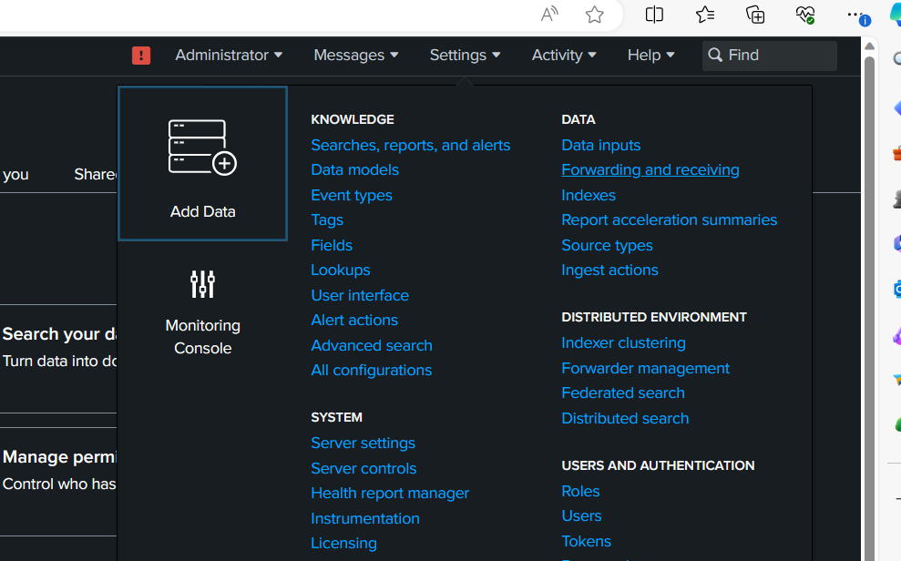Click on “Configure receiving” and “New receiving port”. 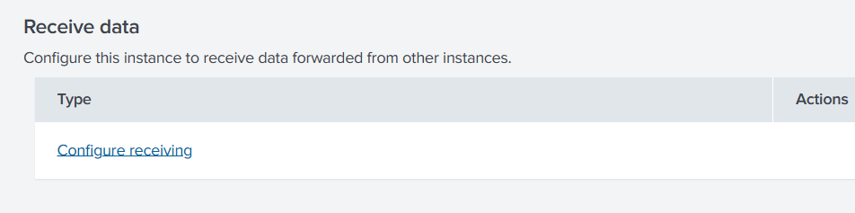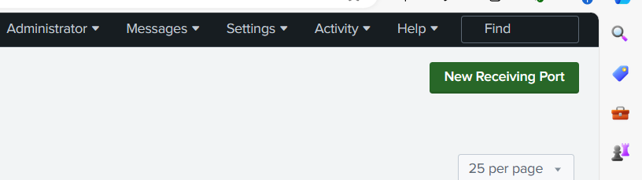 enter the <splunk_listener_port> you assigned before(eg:9997) and save.
Then go to “Settings” > ”Indexes”. 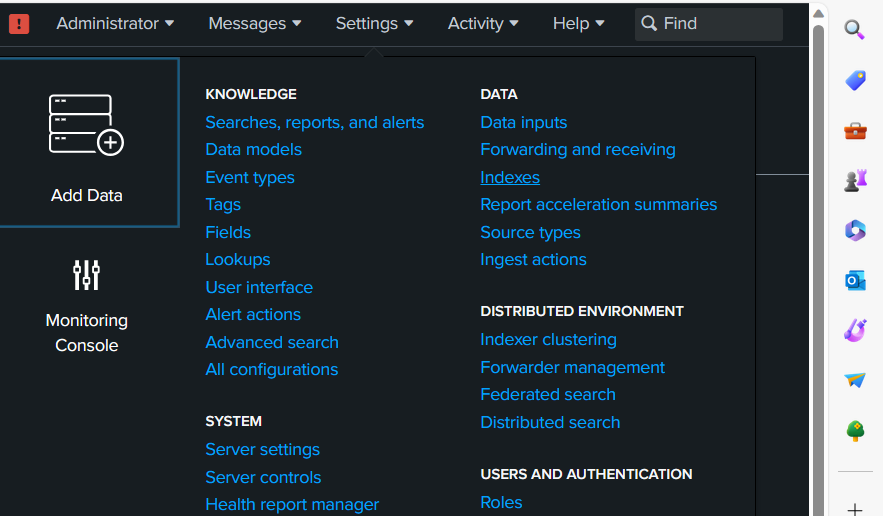Ensure that the "web_logs" index is configured and enabled. If it's not, create the index and enable it. To create: click on “New Index”.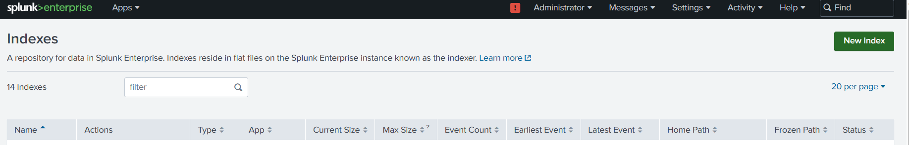Give index name as “web_logs” and save it. 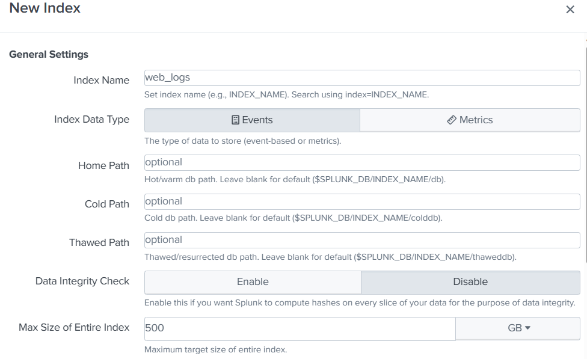Then go to “Search & Reporting”. There search for: index=”web_logs” 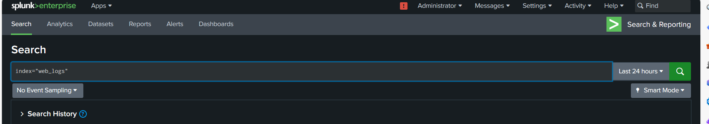Then go to WordPress site and perform some incorrect login events and come back to your Splunk enterprise refresh your search.
 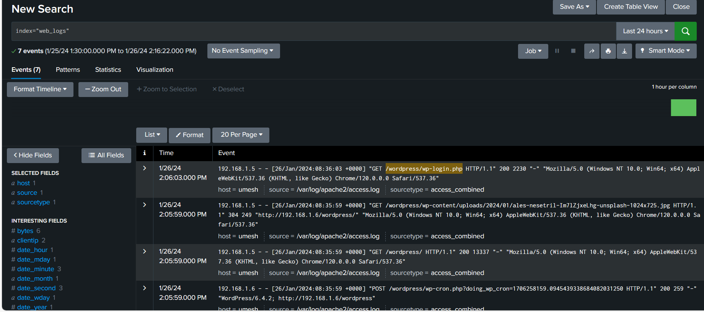By following these steps, you should be able to monitor the WordPress site logs from
your windows machine through Splunk enterprise.
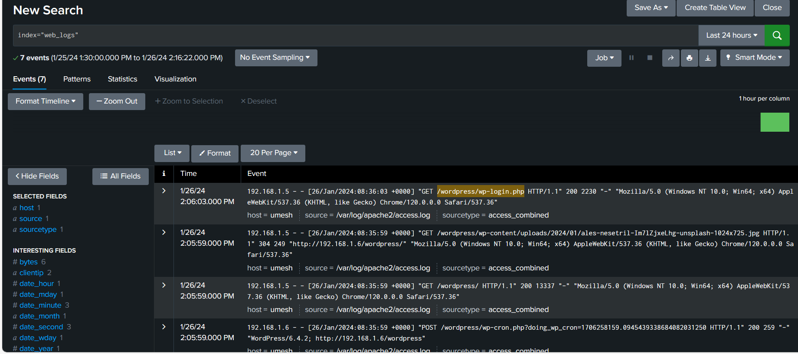By following these steps, you should be able to monitor the WordPress site logs from
your windows machine through Splunk enterprise.Conclusion
Hopefully , this guide provides a step-by-step walkthrough for installing WordPress on Ubuntu 22.04, utilizing Apache as the hosting server, and implementing Splunk for effective log monitoring. By following these instructions, users can not only ensure a seamless setup of their WordPress site but also gain the tools and knowledge needed to monitor logs, track performance, troubleshoot issues, and maintain the health and smooth operation of their online presence. Whether you're a novice embarking on the journey of creating your first website or an experienced user seeking to enhance your online capabilities, this guide aims to simplify the processes of installation and monitoring, empowering you to establish and maintain a strong and resilient online presence.